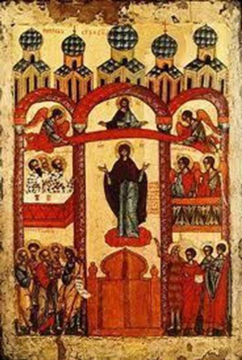Cette année encore la plupart des Cosaques de Russie, mais également de nombreux pays européens où résident des Cosaques se sont retrouvés à Novotcherkassk pour fêter « Pokrov 1 », la fête orthodoxe de Notre Dame de Toute Protection.
La protection de la très sainte Theotokos est l’une des fêtes les plus importantes pour l’ensemble du monde orthodoxe et une des plus vénérées dans l’histoire du Don tranquille.
Cette fête d’origine russe commémore une apparition de la Mère de Dieu à Constantinople dans l’église des Blachernes, illustre sanctuaire marial et très belle église de la Ville. D’après le Synaxaire (livre de l’historique des fêtes et des mémoires des saints pour chaque jour), la Vierge apparut à André, un Fol-en-Christ d’origine slave qui vivait au 10e siècle, et à son disciple Épiphane. L’empire byzantin était alors menacé par les Arabes ou les Slaves.
L’icône du Pokrov représente la Mère de Dieu debout en orante les bras levés, dans un décor d’église byzantine, et accompagnée par les saints. Deux variantes sont en présence : soit la Vierge elle-même déploie largement son voile, soit ce sont deux anges qui étendent le voile sur le peuple. Au-dessus du voile étendu, se tient le Christ en buste, à qui s’adresse la prière de sa Mère.
Pour les Cosaques, cette fête éclatante est associée à l’un des événements les plus marquants de leur histoire, la célèbre victoire des Cosaques qui ont défendu Azov en 1641. Comme le dit la légende, l'intercession miraculeuse de la Madone a permis aux combattants du Don de vaincre les troupes turques, dont la force était souvent supérieure.
La fête du Pokrov a largement été célébrée dans la capitale cosaque, ce 1er octobre (14 dans le calendrier grégorien) et a été honorée de la présence du gouverneur de la région de Rostov, Vasily Y. Golubev, venu féliciter les Cosaques pour leur principale fête.
Dès le début de la matinée, les Cosaques et paroissiens se sont rassemblés sous les arches du conseil militaire de la cathédrale Voznesensky. « Aujourd'hui, la Vierge se tient au milieu de l'Église, et avec les chœurs des saints, elle prie Dieu invisible pour nous les Anges et les évêques de la vénérer, apôtres et les prophètes se réjouir ensemble, pour nous Depuis, elle prie à l'Éternel Dieu ! »
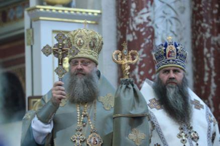
Source : https://www.npi-tu.ru
Durant la célébration, l'Église russe chante, « Avec les chœurs des anges, ô Souveraine Dame, avec les prophètes vénérables et glorieux, avec les Apôtres classée première et avec le Hieromartyrs et Hiérarques, priez pour nous pécheurs, glorifiant la fête de votre protection dans le monde russe. »
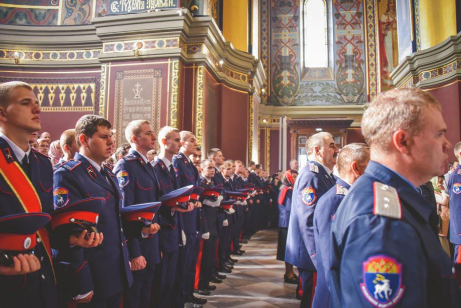
Source: https://www.npi-tu.ru
Source : https://www.npi-tu.ru
Parmi les invités de marque du service on pouvait rencontrer Alexander V. Ischenko, président de l'Assemblée législative de la région de Rostov, Ataman de la Société cosaque « La Grande armée du Don », le général cosaque Victor G. Goncharov, des Atamans du Kazakhstan de l'air, des représentants du gouvernement et des députés de la région de Rostov ; (NPI) Vladimir G. Perederiy.
De nombreuses délégations étrangères étaient également présentes parmi lesquels l’association des Cosaques de France et leur ataman Guennadi Chmyrev, ainsi que les représentants de Finlande et de Lettonie.
À l’issue de la célébration religieuse, les manifestations festives se sont déplacées sur la place Yermak. C'est sur cette place que s’est déroulé le défilé solennel des sociétés cosaques et des établissements d'enseignement des cadets de la « grande armée du Don ». Avant le début du défilé des Cosaques, le gouverneur de la région de Rostov, Vasily Y. Golubev, a chaleureusement félicité les personnes présentes. Il a rappelé à l'audience les étapes importantes de l'histoire des Cosaques associées à cette fête et a souligné que durant toutes les années et malgré les difficultés dans l'histoire du Don tranquille, la Très Sainte Mère de Dieu restait invariablement la protectrice de la Russie et des Cosaques. – « Aujourd'hui nous avons un jour spécial ! » a déclaré Vasily Yurievich. « Frères Cosaques, je tiens à vous féliciter tous pour ces manifestations très importantes et lumineuses de l'Intercession - et merci pour votre service fidèle à la Patrie. Vous défendez le pays, protégez la nature, préservez l'histoire de la région de Don - et êtes un excellent exemple pour la jeune génération. Je tiens à vous souhaiter un plein succès dans l’importante nécessité de préserver et d’accroître la richesse du Don et de notre Russie ! »
Le chef de la métropole du Don, le métropolite de Rostov et Novotcherkassk s'adressèrent également aux cosaques et aux habitants de la ville réunis pour les célébrations. Il leur fut adressé, à cette occasion, les bénédictions et les meilleurs vœux de Sa Sainteté Kirill, Patriarche de Moscou et de toute la Russie.
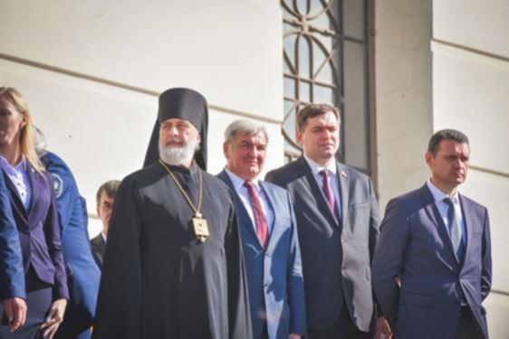
Source : https://www.npi-tu.ru
Héros de la Russie Anatoly Alexandrovich Safronov, Représentant plénipotentiaire adjoint du Président de la Fédération de Russie dans le district fédéral du Sud, s'est joint aux félicitations adressées à l'armée du Don :
« Je suis très heureux d'avoir l'occasion d'assister à de si belles manifestations aujourd’hui ! En ce jour, je tiens à vous dire des mots de gratitude pour votre amour désintéressé pour la Patrie, pour vos exploits glorieux, pour votre fidélité à la foi orthodoxe. Bonne fête ! Paix et bien-être pour vous et vos proches ! »
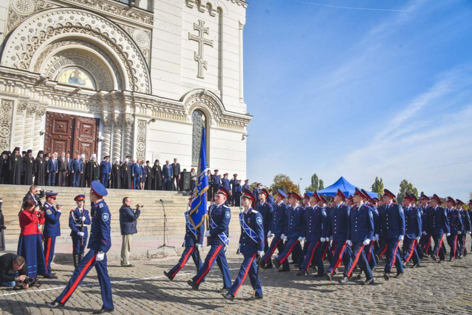
Source : https://www.npi-tu.ru
Le Pokrov s’est poursuivi par la traditionnelle revue des troupes par le gouverneur des corps de cadets et des écoles de formation professionnelle des Cosaques puis par le défilé des cosaques de la Grande Armée du Don. Environ 1 200 Cosaques représentant les 11 districts des Cosaques du Tout-Grand Don situés sur le territoire de la République de Kalmoukie, des régions de Rostov, Volgograd et Astrakhan y ont pris part. Le système d'éducation cosaque a été présenté par environ huit cents cadets des corps de Novotcherkassk, Aksay, Belaya Kalitva, Chakhty, Elista, Astrakhan et d'autres villes de la région de Rostov et du district fédéral du Sud. Le défilé de cosaques est devenu l'un des moments les plus spectaculaires de la fête. Fièrement attendus dans le vent de la bannière, les mélodies des marches se propageaient dans les airs et s'animaient, marquant un pas, le présent et l'avenir de la génération des Cosaques du Don.
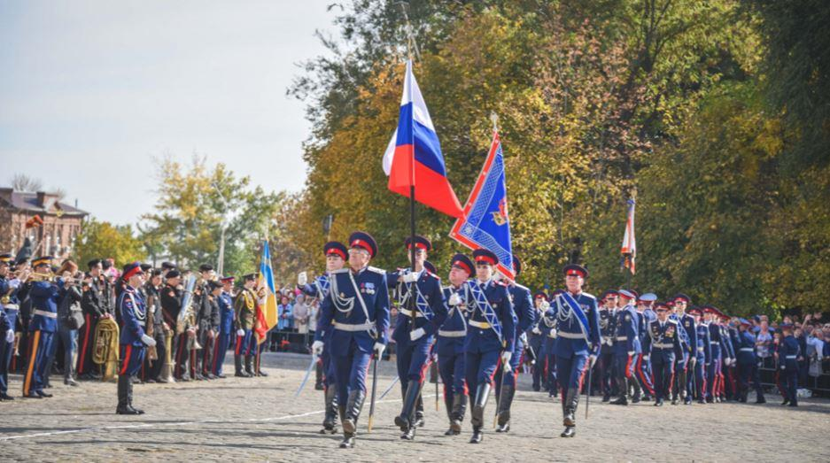
Source : https://www.npi-tu.ru
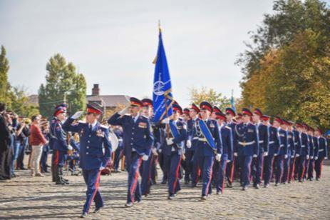
Source : https://www.npi-tu.ru
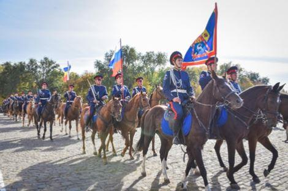
Source : https://www.npi-tu.ru
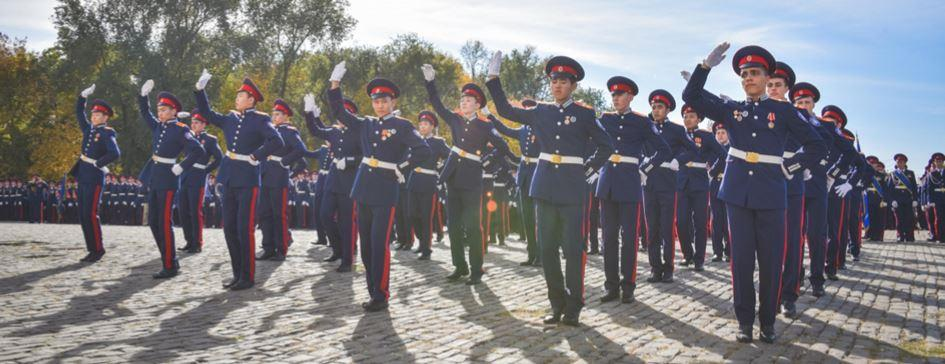
Source : https://www.npi-tu.ru
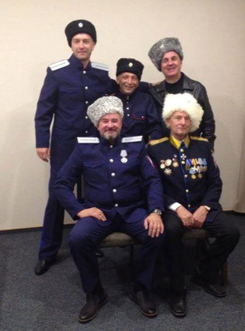
Source : https://www.npi-tu.ru
Cette grande célébration du voile protecteur de la Vierge fut par ailleurs l’occasion pour l’association des Cosaques de France de rencontrer les délégations de Finlande et de Lettonie et de porter sur les fonts baptismaux et sous la protection de la très sainte Theotokos une nouvelle organisation : l’association des Cosaques d’Europe. Bien que n’ayant pu se déplacer les cosaques du Montenegro, de Bulgarie et de Lituanie ont décidé de se joindre à cette internationale cosaque, ayant pour but de tisser un réseau à travers toute l’Europe afin de diffuser la culture cosaque et permettre de retrouver leurs racines aux membres de la Diaspora.
La délégation s’est par ailleurs rendue en pèlerinage à Cherkassk, ancienne capitale des Cosaques du Don, où certains membres de l’association n’ont pas hésité à se baigner dans les eaux sacrées du fleuve.
Enfin, la promesse faites au mois d’août dernier, Guennadi Chmyrev, nouvel ataman des Cosaques d’Europe, est retourné à la maison des enfants handicapés afin de faire un don pour les finances de l’établissement et apporter des cadeaux aux pensionnaires.
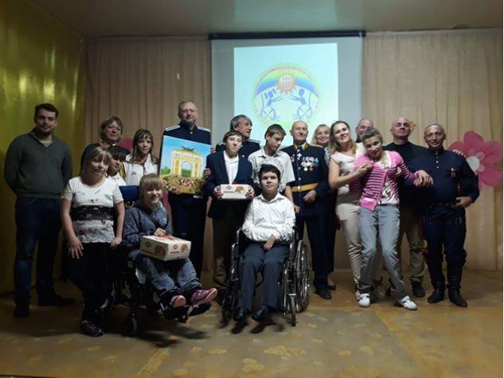Pour la délégation française, le séjour en terre de Russie s’est achevé à Moscou où les membres de la délégation ont été reçus au ministère des affaires étrangères par Monsieur Igor Nicolaïévitch Mozgo, Directeur chargé des relations avec les associations cosaques de l’étranger.
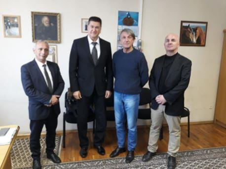
F.M.
Note :
1. « Pokrov » signifie voile au sens propre et reprend de l'hébreu de l'Ancien Testament, « seter » (voile) le sens figuré de « protection, sécurité ».
Partager cette page